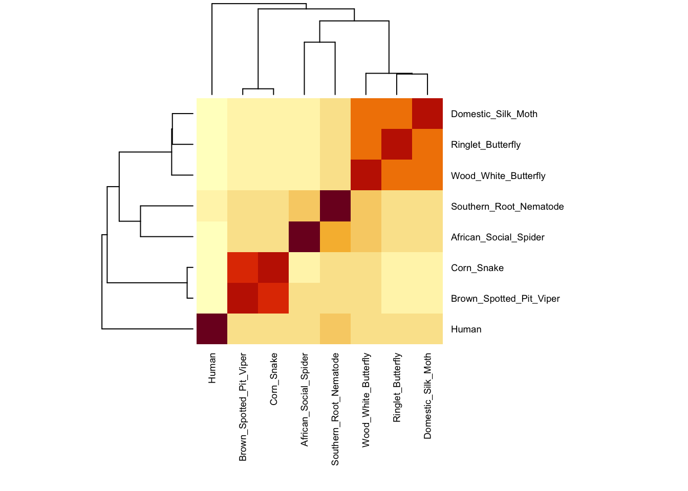
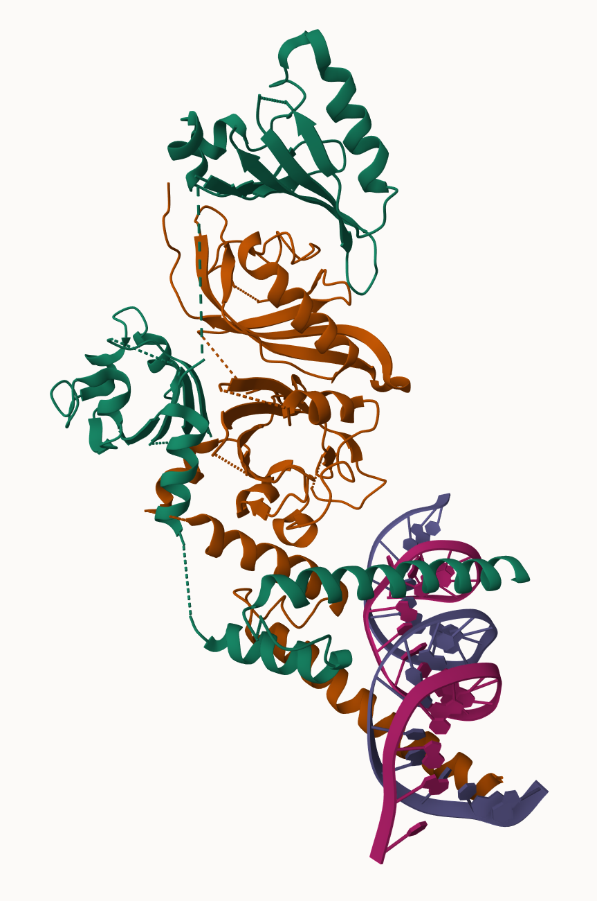
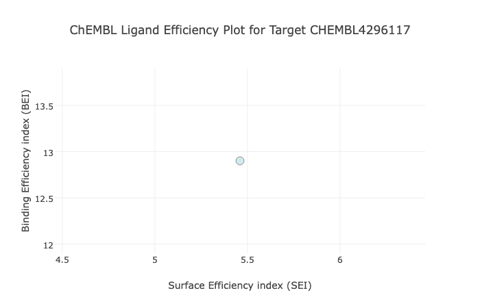

>JZ762439.1 NEFSJ21016_D10_.g_078.ab1 Meloidogyne incognita J2 Meloidogyne incognita cDNA, mRNA sequence
ACGCGCCACACACCGGATATGCGCTTCAGCTACGTCAGCGACGGCTGGAACATTCCGTGCCGCGACGGGC
ACCGAAAACTCATCGGCACCTCCTTCTACGACCTCGTCTACCCGTCGGACCTGCAGTCAGTGGTCACCTG
CATGAAGGAGCTGCAGTCCAAGGGCCATTGCCGCACTCCGTTCTACCGCTGGCTCGGCGCGAATGCCTCG
GTAACGTGGGTCCAGACCGAAGCGACCACCATCAACCACCGCAGCAAGGGCACGAAGGGTTACTATGTGC
TGTGCACCCATTACGTGCTGGGCAACCAGAACGAGATGGAGTCATGGGAGACGCCGTGCTCAGCGTTCAA
CTCTGCCGCAAGGCCAGTGATGACCCGCGTCAAGGCGGAGATTGACGACATCTCAGACTACTGCTTCGGA
CACCAGCAGCCAGGTGTGGAGTGCGTCGATGTTGAGCCACTTGCCGAGTTCTTCCCTCAGTGCTTCGATC
AGGTGGACCAGCGCTCACGGCAGAAGCCCTATCACCCACGCCATGCCAACATGGGCCTGGACGGCGACAG
CGAATTCGACGCCGTCCTGCAGTGGCTCTTCCGCGAGGACGATGACGCTCCGCCACAGTGCGACTCTTGC
CTTACGGTCCCTGCCGGTCGCAGTCGGTGTCAGTCCAATCCCGACGGCATGAAGCGGTCCGCAGCCTACA
TGGCACAGCAGCAGCCAGCCCCGGCATCGGCCTACGGCTCGGCGTTGGACGTCAATCAGTTGTCGGCGGG
TGATATCGCGCAGCCGATGFind-a-gene Project
Q1. Tell me the name of a protein you are interested in. Include the species and the accession number. This can be a human protein or a protein from any other species as long as its function is known.
If you do not have a favorite protein, select human RBP4 or KIF11. Do not use beta globin as this is in the worked example report that I provide you with online.
Protein: CLOCK
Accession number: NP_004489.1
Species: Homo sapiens
Function known: Encodes a protein that plays a central role in the regulation of circadian rhythms—a transcription factor of the basic helix-loop-helix (bHLH) family, containing DNA binding histone acetyltransferase activity. May be associated with behavioral changes in certain populations, and with obesity and metabolic syndrome.
Q2. Perform a BLAST search against a DNA database, such as a database consisting of genomic DNA or ESTs. The BLAST server can be at NCBI or elsewhere. Include details of the BLAST method used, database searched and any limits applied (e.g. Organism).
Method: TBLASTN (2.71.1) search against nematode ESTs
Database: Expressed sequence tags (est)
Organism: Nematodes (Taxid: 6231)
On the BLAST results, clearly indicate a match that represents a protein sequence, encoded from some DNA sequence, that is homologous to your query protein.
Chosen match: Accession JZ762439, a 789 base pair clone from Meloidogyne incognita (southern root-knot nematode). See below for alignment details.


Q3. Gather information about this “novel” protein.
Chosen sequence:
Name: Hypoxia inducible factor 1 alpha subunit
Species: Meloidogyne incognita;
Eukaryota; Metazoa; Ecdysozoa; Nematoda; Chromadorea; Rhabditida; Tylenchina; Tylenchomorpha; Tylenchoidea; Meloidogynidae; Meloidogyninae; Meloidogyne; Meloidogyne incognita group.
Q4. Prove that this gene, and its corresponding protein, are novel. For the purposes of this project, “novel” is defined as follows. Take the protein sequence (your answer to [Q3]), and use it as a query in a blastp search of the nr database at NCBI.


Q5. Generate a multiple sequence alignment with your novel protein, your original query protein, and a group of other members of this family from different species.
Relabeled sequences:
>Human | NP_004889.1 circadian locomoter output cycles protein kaput [Homo sapiens]\nMLFTVSCSKMSSIVDRDDSSIFDGLVEEDDKDKAKRVSRNKSEKKRRDQFNVLIKELGSMLPGNARKMDK\nSTVLQKSIDFLRKHKEITAQSDASEIRQDWKPTFLSNEEFTQLMLEALDGFFLAIMTDGSIIYVSESVTS\nLLEHLPSDLVDQSIFNFIPEGEHSEVYKILSTHLLESDSLTPEYLKSKNQLEFCCHMLRGTIDPKEPSTY\nEYVKFIGNFKSLNSVSSSAHNGFEGTIQRTHRPSYEDRVCFVATVRLATPQFIKEMCTVEEPNEEFTSRH\nSLEWKFLFLDHRAPPIIGYLPFEVLGTSGYDYYHVDDLENLAKCHEHLMQYGKGKSCYYRFLTKGQQWIW\nLQTHYYITYHQWNSRPEFIVCTHTVVSYAEVRAERRRELGIEESLPETAADKSQDSGSDNRINTVSLKEA\nLERFDHSPTPSASSRSSRKSSHTAVSDPSSTPTKIPTDTSTPPRQHLPAHEKMVQRRSSFSSQSINSQSV\nGSSLTQPVMSQATNLPIPQGMSQFQFSAQLGAMQHLKDQLEQRTRMIEANIHRQQEELRKIQEQLQMVHG\nQGLQMFLQQSNPGLNFGSVQLSSGNSSNIQQLAPINMQGQVVPTNQIQSGMNTGHIGTTQHMIQQQTLQS\nTSTQSQQNVLSGHSQQTSLPSQTQSTLTAPLYNTMVISQPAAGSMVQIPSSMPQNSTQSAAVTTFTQDRQ\nIRFSQGQQLVTKLVTAPVACGAVMVPSTMLMGQVVTAYPTFATQQQQSQTLSVTQQQQQQSSQEQQLTSV\nQQPSQAQLTQPPQQFLQTSRLLHGNPSTQLILSAAFPLQQSTFPQSHHQQHQSQQQQQLSRHRTDSLPDP\nSKVQPQ\n\n>Southern_Root_Nematode | JZ762439.1 NEFSJ21016_D10_.g_078.ab1 Meloidogyne incognita J2 Meloidogyne incognita cDNA, mRNA sequence,\nKLIGTSFYDLVYPSDLQSVVTCMKELQSKGHCRTPFYRWLGANASVTWVQTEATTINHRSKGTKGYYVLCTHYVLG\n\n>Wood_White_Butterfly | XP_050671994.1 hypoxia-inducible factor 1-alpha-like isoform X5 [Leptidea sinapis]\nMCFNVDGAPCQYTNVVDLEDFMNNEKRKEKSRVAARCRRTKEMQIFAEMTAALPAKKEMVEQLDKSSVMRLAISYLRVRD\nIVSLLPADTEPPKLKSPKGLEEIQSELSYMKALDGFVLVLSQQGDIIYCSDNITEHLGVSQMEIMGQSVFEFSHPCDHEE\nIREALRSNGAGRRDLLLRLKCTLTSKGRNVHIKSASYKVIHMTGHMLTPDKESNNNDEEGKKDLKKPTNGALIAVGRPIP\nHPSNIEVPLDTKTFLTKHSLDMKFTYTDEGLLNALGFESDELVGCSLYDYHHAADSASLVQQFKSLFSKGQCETGQYRFL\nGKSGGYAWIQTQATVITDKQQKPSFVVCVNYVISGIECKDEVFAAHQVQHADLKPAVAALPATAVPICDNPAPANGAIVG\nVILPEEERPIPVTELIFAPREKEMNKGFLMFSQNKGITSEWMLNRDSLVLKDEPEDLTHLAPTAGDAHILLENSPFDMFD\nDFILNDNYCSLLGDDLANGSPVDSLIGDSLLSSPERQENESTGEQSSLLTELSLDAFDSARSDTDIDDGNSPFIPTTDEL\nPVLEPAVMWGALPDSVRQARPQPSEIQSSSPALQRLLVAPPTGPPPQDIITNIYSEQGLIPSRNISSWDTGVKRIMKQEE\nEPTAKRIKRSPTPTPTQTSTSSSVLMNLLVSGCDVDAGYICMVQCRPRHKAKA\n\n>African_Social_Spider | XP_035210551.1 hypoxia-inducible factor 1-alpha-like isoform X1 [Stegodyphus dumicola]\nMCGGKVAIPPIVKEKRRNSEKRKEKSRDAARCRRSKESEIFSDLSGQLPLAPGVASALDKASIMRLTVGYLKVREMMKIL\nIPCGRTVTGSSNDSIYAAVLNGFLLVLSEEGDIIYLSENVEEFIGISQVDMMGHSVYDFSHPCDHEDIKQVLAPKISEKI\nQIKTDNFGRETISFFVRMKSTVKSKGRTMNLKSAAYQVIHYIGHRFDKPRGVEDDDKCPTFYLVFIGKTIPHPAQIDVPL\nDKDIFVSRHSPDMKFTHIDERISEFLGFTNSELIGQSAYSFHHPLDAQTVFSAFKTLFSKGQCETGYYRFLSKYGGYVWL\nVTQATVIYENGTKPECVVCLNYVLSKVENGHEIVSGQQEQSIKEKEEAEDENICVAEEEGSPSEPPVLLSSTRVIFAPKE\nSVMSKDFLNFPDADLQDLDLEPPLEKIPCSVVNSATLNQNVLFQESLKDTKLNLEFDFFQDDPCTLENGISEDPFISYRD\nDSLSSPSYCGTPESSLNLHTSNSTSPDRFNTTPGTPDSGSLSDIPSLDPIDEFSNLDLKFTMPPSASDDSECCDENLDFR\nAPYISMNMDDDFPLISPSSSVMWGPQEPAPKKLPQERLPEIEPQRISPPKQKPVTENLNSSLAALLQSDVKKTPQSKQEK\nNAVARRESNSHKRWSGSSADNNKSSSLKQRPFNPSKGYGNGGHIIMLDSIPVKKQNSKSNASQRRTAQPSASDRRSNSPP\nFGSHTATVKVNDRLIKVQVSVSELPTSPIEHKQPFPSPPDPPPKRTSPSRLGPTESPKRLKVDNGLICSGPQGFASDSVL\nLNLLISGEDASRGYLCSGNSRYSDSKFESAMLSLSSDDSSSKQTNDSSSNCTELLASESELLDFLKISQYDAEVNAPIQS\nSHLLQGDDLLSALDHQPLLRNVPALV\n\n>Domestic_Silk_Moth | XP_037876182.1 hypoxia-inducible factor 1-alpha isoform X4 [Bombyx mori]\nMSTKPANQKRRNNEKRKEKSRVAARCRRTKEMQIFSELTAALPAKKEEVEQLDKASVMRLAISYLRVRDVVSMLPDVNSD\nQSKMQNPEGFEELASELSYMRALDGFVLVLSQQGDIVYCSDNIAEHLGVSQMEIMGQSVFEFSHPCDHDEIREALRTNGG\nARRDLLLRLKCTLTSKGRNVHLKSASYKVIHITGHMLASTEDNERNNNETKADEEKKGKAGCLVAVGRPIPHPSNIEIPL\nDSKTFLSKHSLDMKFTYVDESLLNTLGFGSEELVGRSLYDYHHAADSASMIQQFKSLFSKGQCETGQYRFLAKSGGYSWV\nQTQATVITDKQQKPISVVCVNYIISGIECKDEVFAAHQVQHADLKPKLPAVASPGVSFRAPVEPLANGAIVAIVPPEEER\nPIPVTELIFAPRKKEMNKGFLMFSQDEGLTSEWLFNQSLVLKDEPEDLTHLAPTAGDACIPLENSPFDMFDEFILSDNYC\nSLLGDDLANGSPVDPLAPDPSLLSSPESQENDSSCEQSSLLTELSLDAFDNTRSDEIDDSNSPFIPISDELPVLEPAVMW\nGALPDSVSQARPQPSETHTSPAPALQRLLTGPPPQDLITSIYSDQGLMPSRSISTWDTGVKRVMKEEEEPSAKRVKRSPS\nPVAPKPKSQSSSVLMNLLDIPQQSTPHKQPMKANYQILPNTQMLGLQNVLHRNMQVPIINITQAVPNKHVMRASTPINQM\nRTNMTTGPMSPLSLNIGSPMYSLPSSPNSYSSPAMSPAQRERVMSPYSTPQSLSPVGKFHQMYSPGQRMVSPTGVIQGSD\nPYLTTKMQPSPGFPMQVNDILLDTNVQLPTSDFWADPEFLQGTSDLLTAFDDVKLG\n\n>Ringlet_Butterfly | XP_034834054.1 hypoxia-inducible factor 1-alpha isoform X4 [Maniola hyperantus]\nMIKSEMASKPTNQKRRNNEKRKEKSRVAARCRRTKEMQIFVELTAALPAKKEEVEQLDKASVMRLAISYLRVRDVVSMLP\nEDKEAPKLQSPKGLEEVQSELSYMNALDGFVLVLSQQGDIVYCSENIADHLGVSQMEIMGQSVFEFSHPCDHDEIRESLR\nAGNDGRRDLLLRLKCTLTSKGRNVHLKSASYKVIHVTGHMITPTEEKTKDQDLSTDSDEEKKEVKSYTNTGALVAVGRPI\nPHPSNIETPLNSMTFLTKHSLDMKFTYTDEGLTNSLGFESEELVGRSLYEYHHAADSASLAQQFKSLFSKGQCETGQYRF\nLAKTGGYSWVQTQATVITDKQQKPISVICVNYVISGIECKDEVFAAHQVHHADLKPVVAPAPLIRVSTEPPANGAIVGIV\nAPEEERPIPVTEQIFVPRKKEMNKGFLMFSQNEGLTSESHSNCKSLVLKDEPEDLTHLAPTAGDACISLENNSPFDMFDD\nFMLNDNYCSLLGDDLANGSPVDSLIADSLLSSPEPQETESSCEQSSLLTELSLDAFDNRSDNDIDDGNSPFIPTTDELPL\nLEPAVMWGVLPDSVSQAKPQPSEVQTSAPALQRLLAAPPTGPPPQDIITNIYSDPGLIPSRSVSSWDTGVKRVMKQEEES\nTAKRVKRSPSPAAPTARTPSSSVLMNLLDIHPQAKQQIRQQLRSNYQMSLNTPRTSPQSPVNKNLPVPVINIIRSGPNEP\nLMRANTTAPNPPMIRTSPMSPLTLNVGSPMYSLPSSPNTPNYSPAMSPAQKDRVLSPYSTPQSLSPAGSYMYSPNNKLLS\nPSGVMRGYDPYLNNKMQTSPGFPLQSDMLLDTNMPLASTDFWPDSDMLQGTSDLLTAFDDVKLV\n\n>Corn_Snake | XP_034294080.1 hypoxia-inducible factor 3-alpha isoform X3 [Pantherophis guttatus]\nMSWSKYQRSTTEIRKEKSRDAARCRRSKETEVFYQLAHTLPFARGVSAHLDKASIMRLTISYLRMHKLLNSGEWRDQVKA\nEEQVDSYYLKALDGFLMVLTEEGDMIYLSENVNKHLGLSQLELIGHSVFDFIHPCDQEELQDVLSPRQGFSKKAEVKTER\nNFSLRMKSTLTTRGRTVNLKSATWKVLHCSGHMRSYAPSKPATGKEGEGGFAEPPLRCLVLICEAIPHPANIETPLDSGT\nFLSRHTMDMKFTYCDDRIVEMAGYTSESLLGCSLYEYIHALDSDSVSKSINTLLSKGQAVTGQYRFLARNGGYIWIQTEA\nTVISSSKNSQPESIVCIHFVLSQVEENGLVLSLEQTDRQGEHRRLPPPCLEGLDSDSALEEMDPNGGDTIINLSFELRGP\nKILAFLRPANISEEELQLDPKRFCSPDLQKLLGPIFDPPGTQNSAGGTGRAKPPAPVPKTAPVVKKMSGNHNLSDLPEEL\nIFDMENVQKLFASNKEEQSMETALQDYEGLDLEMLAPYISMDDDFQLSSTDHPPWLTEKRGDPGAGPRPASPPPRPRSRS\nFHGVSPRPPEPAPLPRWGSDSSLSQGRPIETPLANSPCGEGQMVEMVASVKIQSVQDGTGLNGQRSPLGGRKRTREISLD\nEERDLFLETIPPKRAHNHEAEGFLMPSLSLGFLLSVEECLDARSERGCGGTVALGKKLLALEEPMGLLGDMLPFVVDGPA\nLSQLALYDGEEEVSGRGGEHFQLGEELLVELDQAT\n\n>Brown_Spotted_Pit_Viper | XP_029140890.1 hypoxia-inducible factor 3-alpha [Protobothrops mucrosquamatus]\nMPRCVQNMSPEKLGSSSATIGHPNTGEKGSTTEIRKEKSRDAARCRRSKETEVFYQLAHTLPFARGVSAHLDKASIMRLT\nISYLRMHKLLNSGEWRDQVKAEEQVDSYYLKALDGFLMVLTEEGDMIYLSENVNKHLGLSQLELIGHSVFDFIHPCDQEE\nLQDVLSPRQGFSKKGEVKTERNFSLRMKSTLTTRGRTVNLKSATWKVLHCSGHMRCYAPSKPAAGKEGEGGFTEPPLRCL\nVLICEAILHPANIETPLDSGTFLSRHTMDMKFTYCDDRIVEMAGYTSESLLGCSLYEYIHALDSDSVSKSINTLLSKGQA\nVTGQYRFLARNGGYIWIQTEATVISSSKNSQPESIVCMHFVLSQVEENGLVLSLEQTDRQGEHRRLPPPCLEGLDSESAL\nDEMDPNGGDTIINLSFELRGPKILAFLRPANISEEELQLDPKRFCSPDLQKLLGPIFDPPGTQNSAGGAVRAKLPAPIAK\nLAPVVKKASGNHDSAWLPFPLGTLCSPLQDYEGLDLEMLAPYISMDDDFQLSSTDHPPWLAEKRRDPAGAGARPVSPPPR\nPRSRSFHGVSPRPPEAPTLPRWGSDSSLSQGRPVETPLANSPCGEGQMVEMVASVKIQSVQDGAGLNGHRSPLGGKKRAR\nEISLDEERDLFLETSPPKRAHNHEAEGFLMPSLSLGFLLSVEECLDARSERGCGGTVALGKKLLALEEPMGLLGDMLPFV\nVDGPALSQLALYDGEEEVSGRGGEHFQLGEELLVELDQATAlignment using EBI’s MUSCLE:
CLUSTAL multiple sequence alignment by MUSCLE (3.8)\n\n\nHuman MLFTVSCSKMSSIVDRDDSSIFDGLVEEDDKDKAKRVSRNKSEKK-RRDQFNVLIKELGS\nCorn_Snake ----------------------MSWSKYQRSTTEIRKEKSRDAARCRRSKETEVFYQLAH\nBrown_Spotted_Pit_Viper -MPRCVQNMSPEKLGSSSATIGHPNTGEKGSTTEIRKEKSRDAARCRRSKETEVFYQLAH\nDomestic_Silk_Moth --------------------MSTKPANQKRRNNEKRKEKSRVAARCRRTKEMQIFSELTA\nWood_White_Butterfly ---------MCFNVDGAPCQYTNVVDLEDFMNNEKRKEKSRVAARCRRTKEMQIFAEMTA\nRinglet_Butterfly ---------------MIKSEMASKPTNQKRRNNEKRKEKSRVAARCRRTKEMQIFVELTA\nSouthern_Root_Nematode ------------------------------------------------------------\nAfrican_Social_Spider --------------MCGGKVAIPPIVKEKRRNSEKRKEKSRDAARCRRSKESEIFSDLSG\n \n\nHuman MLP---GNARKMDKSTVLQKSIDFLRKHKEITAQSD-ASEIRQDWKPTFLSNEEFTQLML\nCorn_Snake TLPFARGVSAHLDKASIMRLTISYLRMHKLLN---------SGEWRDQVKAEEQVDSYYL\nBrown_Spotted_Pit_Viper TLPFARGVSAHLDKASIMRLTISYLRMHKLLN---------SGEWRDQVKAEEQVDSYYL\nDomestic_Silk_Moth ALPAKKEEVEQLDKASVMRLAISYLRVRDVVSMLPDVNSDQSKMQNPEGFEELASELSYM\nWood_White_Butterfly ALPAKKEMVEQLDKSSVMRLAISYLRVRDIVSLLPA-DTEPPKLKSPKGLEEIQSELSYM\nRinglet_Butterfly ALPAKKEEVEQLDKASVMRLAISYLRVRDVVSMLPE-DKEAPKLQSPKGLEEVQSELSYM\nSouthern_Root_Nematode ------------------------------------------------------------\nAfrican_Social_Spider QLPLAPGVASALDKASIMRLTVGYLKVREMMKILIP---------CGRTVTGSSNDSIYA\n \n\nHuman EALDGFFLAIMTDGSIIYVSESVTSLLEHLPSDLVDQSIFNFIPEGEHSEVYKILSTHLL\nCorn_Snake KALDGFLMVLTEEGDMIYLSENVNKHLGLSQLELIGHSVFDFIHPCDQEELQDVLSPR--\nBrown_Spotted_Pit_Viper KALDGFLMVLTEEGDMIYLSENVNKHLGLSQLELIGHSVFDFIHPCDQEELQDVLSPR--\nDomestic_Silk_Moth RALDGFVLVLSQQGDIVYCSDNIAEHLGVSQMEIMGQSVFEFSHPCDHDEIREALRTN--\nWood_White_Butterfly KALDGFVLVLSQQGDIIYCSDNITEHLGVSQMEIMGQSVFEFSHPCDHEEIREALRSN--\nRinglet_Butterfly NALDGFVLVLSQQGDIVYCSENIADHLGVSQMEIMGQSVFEFSHPCDHDEIRESLRAG--\nSouthern_Root_Nematode ------------------------------------------------------------\nAfrican_Social_Spider AVLNGFLLVLSEEGDIIYLSENVEEFIGISQVDMMGHSVYDFSHPCDHEDIKQVLAPKIS\n \n\nHuman ESDSLTPEY-LKSKNQLEF---CCHMLRGTIDPKEPSTYEYVKFIGNFKSLNSVSS-SAH\nCorn_Snake --QGFSKKAEVKTERNFSLRMKSTLTTRGRTVNLKSATWKVLHCSGHMRSYAPSKPATGK\nBrown_Spotted_Pit_Viper --QGFSKKGEVKTERNFSLRMKSTLTTRGRTVNLKSATWKVLHCSGHMRCYAPSKPAAGK\nDomestic_Silk_Moth ----------GGARRDLLLRLKCTLTSKGRNVHLKSASYKVIHITGHMLASTEDNE-RNN\nWood_White_Butterfly ----------GAGRRDLLLRLKCTLTSKGRNVHIKSASYKVIHMTGHMLTPDKESNNNDE\nRinglet_Butterfly ----------NDGRRDLLLRLKCTLTSKGRNVHLKSASYKVIHVTGHMITPTEEKTKDQD\nSouthern_Root_Nematode ------------------------------------------------------------\nAfrican_Social_Spider EKIQIKTDNFGRETISFFVRMKSTVKSKGRTMNLKSAAYQVIHYIGH-----------RF\n \n\nHuman NGFEGTIQRTHRPSYEDRVCFVATVRLATPQFIKEMCTVEEP--NEEFTSRHSLEWKFLF\nCorn_Snake EGEGGFAEPPLR-------CLVLICEA-----IPHPANIETPLDSGTFLSRHTMDMKFTY\nBrown_Spotted_Pit_Viper EGEGGFTEPPLR-------CLVLICEA-----ILHPANIETPLDSGTFLSRHTMDMKFTY\nDomestic_Silk_Moth NETKADEEKKGKAG-----CLVAVGRP-----IPHPSNIEIPLDSKTFLSKHSLDMKFTY\nWood_White_Butterfly EGKKDLKKPTNG-------ALIAVGRP-----IPHPSNIEVPLDTKTFLTKHSLDMKFTY\nRinglet_Butterfly LSTDSDEEKKEVKSYTNTGALVAVGRP-----IPHPSNIETPLNSMTFLTKHSLDMKFTY\nSouthern_Root_Nematode ------------------------------------------------------------\nAfrican_Social_Spider DKPRGVEDDDKCPTF----YLVFIGKT-----IPHPAQIDVPLDKDIFVSRHSPDMKFTH\n \n\nHuman LDHRAPPIIGYLPFEVLGTSGYDYYHVDDLENLAKCHEHLMQYGKGKSCYYRFLTKGQQW\nCorn_Snake CDDRIVEMAGYTSESLLGCSLYEYIHALDSDSVSKSINTLLSKGQAVTGQYRFLARNGGY\nBrown_Spotted_Pit_Viper CDDRIVEMAGYTSESLLGCSLYEYIHALDSDSVSKSINTLLSKGQAVTGQYRFLARNGGY\nDomestic_Silk_Moth VDESLLNTLGFGSEELVGRSLYDYHHAADSASMIQQFKSLFSKGQCETGQYRFLAKSGGY\nWood_White_Butterfly TDEGLLNALGFESDELVGCSLYDYHHAADSASLVQQFKSLFSKGQCETGQYRFLGKSGGY\nRinglet_Butterfly TDEGLTNSLGFESEELVGRSLYEYHHAADSASLAQQFKSLFSKGQCETGQYRFLAKTGGY\nSouthern_Root_Nematode --------------KLIGTSFYDLVYPSDLQSVVTCMKELQSKGHCRTPFYRWLGANASV\nAfrican_Social_Spider IDERISEFLGFTNSELIGQSAYSFHHPLDAQTVFSAFKTLFSKGQCETGYYRFLSKYGGY\n .::* * *. : * .: : * . *: : **:* \n\nHuman IWLQTHYYITYH-QWNSRPEFIVCTHTVVSYAEVR-----AERRRELGIEE---SLPETA\nCorn_Snake IWIQTEATVISS-SKNSQPESIVCIHFVLSQVEENGLVLSLEQTDRQGEHR---RLPPPC\nBrown_Spotted_Pit_Viper IWIQTEATVISS-SKNSQPESIVCMHFVLSQVEENGLVLSLEQTDRQGEHR---RLPPPC\nDomestic_Silk_Moth SWVQTQATVIT--DKQQKPISVVCVNYIISGIECKDEVFAAHQVQHADLKP---KLPAVA\nWood_White_Butterfly AWIQTQATVIT--DKQQKPSFVVCVNYVISGIECKDEVFAAHQVQHADLKPAVAALPATA\nRinglet_Butterfly SWVQTQATVIT--DKQQKPISVICVNYVISGIECKDEVFAAHQVHHADLKP---VVAPAP\nSouthern_Root_Nematode TWVQTEATTINHRSKGTKGYYVLCTHYVLG------------------------------\nAfrican_Social_Spider VWLVTQATVIY--ENGTKPECVVCLNYVLSKVENGHEIVSGQQEQSIKEKE---EAEDEN\n *: * .. . ::* : ::. \n\nHuman ADKSQDSGSDNRINTVSLKEALERFDHSPTPSASSRSSRKSSHTAVSDPSSTPTKIPTDT\nCorn_Snake LEGLDSDSAL--------------EEMDPNGGDTIINLSFELRGPKILAFLRPANISEEE\nBrown_Spotted_Pit_Viper LEGLDSESAL--------------DEMDPNGGDTIINLSFELRGPKILAFLRPANISEEE\nDomestic_Silk_Moth SPGVSFRAPVEPLANGAIVAIVPPEEERPIPVTELIFAPRKKEMNKGFLMFSQDEGLTSE\nWood_White_Butterfly VPICDNPAPA----NGAIVGVILPEEERPIPVTELIFAPREKEMNKGFLMFSQNKGITSE\nRinglet_Butterfly LIRVSTEPPA----NGAIVGIVAPEEERPIPVTEQIFVPRKKEMNKGFLMFSQNEGLTSE\nSouthern_Root_Nematode ------------------------------------------------------------\nAfrican_Social_Spider ICVAEEEGS-------------PSEPPVLLSSTRVIFAPKESVMSKDFLNFPDADLQDLD\n \n\nHuman STPPRQHLP---AHEKMVQRRSSFSSQ----------------------SINSQSVGSSL\nCorn_Snake LQLDPKRFC---SPDLQKLLGPIFDPP----------------------GTQNSAGGTGR\nBrown_Spotted_Pit_Viper LQLDPKRFC---SPDLQKLLGPIFDPP----------------------GTQNSAGGAVR\nDomestic_Silk_Moth WLFN-QSLVLKDEPEDLTHLAPTAGDACIPLE-NSPFDMFDE-------FILSDNYCSLL\nWood_White_Butterfly WMLNRDSLVLKDEPEDLTHLAPTAGDAHILLE-NSPFDMFDD-------FILNDNYCSLL\nRinglet_Butterfly SHSNCKSLVLKDEPEDLTHLAPTAGDACISLENNSPFDMFDD-------FMLNDNYCSLL\nSouthern_Root_Nematode ------------------------------------------------------------\nAfrican_Social_Spider LEPPLEKIPCSVVNSATLNQNVLFQESLKDTKLNLEFDFFQDDPCTLENGISEDPFISYR\n \n\nHuman TQPVMSQATNLPIPQGMSQFQFSAQLGAMQHLKDQLEQRTRMIEANIHRQQEELRKIQEQ\nCorn_Snake AKPPAPVPKTAPVVKKMSGNHNLSDLPEELIFDMENVQKLFASN----KEEQSMETALQD\nBrown_Spotted_Pit_Viper AKLPAPIAKLAPVVKKASGNHDSAWLP---------------------FPLGTLCSPLQD\nDomestic_Silk_Moth GDDLAN----GSPVDPLAPDPSLLSSPESQENDSSCEQSSLLTE----LSLDAFDNTRSD\nWood_White_Butterfly GDDLAN----GSPVDSLIGD-SLLSSPERQENESTGEQSSLLTE----LSLDAFDSARSD\nRinglet_Butterfly GDDLAN----GSPVDSLIAD-SLLSSPEPQETESSCEQSSLLTE----LSLDAFDN-RSD\nSouthern_Root_Nematode ------------------------------------------------------------\nAfrican_Social_Spider DDSLSSPSYCGTPESSLNLHTSNSTSPDRFNTTPGTPDSGSLSDIPSLDPIDEFSNLDLK\n \n\nHuman LQM------------VHGQGLQMFLQ----QSNPGLNFGSVQLSSGNSSNIQQLAPINMQ\nCorn_Snake YEG------------LDLEMLAPYIS--MDDDFQLSSTDHPPWLTEKRGDP-GAGPRPAS\nBrown_Spotted_Pit_Viper YEG------------LDLEMLAPYIS--MDDDFQLSSTDHPPWLAEKRRDPAGAGARPVS\nDomestic_Silk_Moth -EI------------DDSN--SPFIP--ISDELPVLEP--AVMWGALPDSVSQARPQPSE\nWood_White_Butterfly TDI------------DDGN--SPFIP--TTDELPVLEP--AVMWGALPDSVRQARPQPSE\nRinglet_Butterfly NDI------------DDGN--SPFIP--TTDELPLLEP--AVMWGVLPDSVSQAKPQPSE\nSouthern_Root_Nematode ------------------------------------------------------------\nAfrican_Social_Spider FTMPPSASDDSECCDENLDFRAPYISMNMDDDFPLISPSSSVMWGPQ-------EPAPKK\n \n\nHuman GQVVPTNQIQSGMNTGHIGTTQ-----------------HMIQQQTLQSTSTQSQQNVLS\nCorn_Snake PPPRPRSRSFHGVSPRPPEPAP------------------LPRWG--------SDSSLSQ\nBrown_Spotted_Pit_Viper PPPRPRSRSFHGVSPRPPEAP------------------TLPRWG--------SDSSLSQ\nDomestic_Silk_Moth THTSPAPALQRLL----TGPPPQDLITSIYSDQGLMPSRSISTWDTGVKRVMKEEEEPSA\nWood_White_Butterfly IQSS-SPALQRLLVAPPTGPPPQDIITNIYSEQGLIPSRNISSWDTGVKRIMKQEEEPTA\nRinglet_Butterfly VQTS-APALQRLLAAPPTGPPPQDIITNIYSDPGLIPSRSVSSWDTGVKRVMKQEEESTA\nSouthern_Root_Nematode ------------------------------------------------------------\nAfrican_Social_Spider LPQERLPEIEPQRISPPKQKPVTENLNSSLA--------ALLQSDVKKTPQSKQEKNAVA\n \n\nHuman GHSQQTSLP-SQTQSTLTAPLYNTMVISQPAAGSMV--------QIPSSMPQNSTQSAAV\nCorn_Snake GRPIETPLANSPCGEGQMVEMVASVKIQSVQDGTGLNGQ---------RSPLGGRKRTRE\nBrown_Spotted_Pit_Viper GRPVETPLANSPCGEGQMVEMVASVKIQSVQDGAGLNGH---------RSPLGGKKRARE\nDomestic_Silk_Moth KRVKRSPSPVAPKPKSQSSSVLMNLLDI-PQQSTPHKQPMKANYQILPNTQMLGLQNVLH\nWood_White_Butterfly KRIKRSPTP-TPTQTSTSSSVLMNLLVSGCDVDAGY------------------------\nRinglet_Butterfly KRVKRSPSPAAPTARTPSSSVLMNLLDIHPQAKQQIRQQLRSNYQMSLNTPRTSPQSPVN\nSouthern_Root_Nematode ------------------------------------------------------------\nAfrican_Social_Spider RRESNSHKRWSGSSADNNKSSSLKQRPFNPSKGYGNGGHIIMLDSIPVKKQNSKSNASQR\n \n\nHuman TTFTQDRQIRFSQGQQLVTKLVTAPVA--------CGAVMVPSTMLMGQVVTAYPTFATQ\nCorn_Snake ISLDEERDLFLETIPPKRAHNHE------------AEGFLMP-SLSLGFLLSVEECLDAR\nBrown_Spotted_Pit_Viper ISLDEERDLFLETSPPKRAHNHE------------AEGFLMP-SLSLGFLLSVEECLDAR\nDomestic_Silk_Moth RNMQVPIINITQAVPNKHVMRASTPINQ--MRTNMTTGPMSPLSLNIGSPMYSLPSSPNS\nWood_White_Butterfly --------------------------------------------------ICMVQCRPRH\nRinglet_Butterfly KNLPVPVINIIRSGPNEPLMRANTTAPN--PPMI-RTSPMSPLTLNVGSPMYSLPSSPNT\nSouthern_Root_Nematode ------------------------------------------------------------\nAfrican_Social_Spider RTAQPSASDRRSNSPPFGSHTATVKVNDRLIKVQVSVSELPTSPIEHKQPFPSPPDPPPK\n \n\nHuman QQQSQTLSVTQQQQQQSSQEQQLTSVQQPSQAQLTQPPQQFLQTSRLLHGNP---STQLI\nCorn_Snake SERGCGGTVALGKKLLALEEPMGLLGDMLPFVVDGPALSQLALYDG--------------\nBrown_Spotted_Pit_Viper SERGCGGTVALGKKLLALEEPMGLLGDMLPFVVDGPALSQLALYDG--------------\nDomestic_Silk_Moth -YSSPAMSPAQRERVMSPYSTPQSLSPVGKFHQMYSPGQRMVSPTGVIQGSDPYLTTKMQ\nWood_White_Butterfly KAKA--------------------------------------------------------\nRinglet_Butterfly PNYSPAMSPAQKDRVLSPYSTPQSLSPAGSY--MYSPNNKLLSPSGVMRGYDPYLNNKMQ\nSouthern_Root_Nematode ------------------------------------------------------------\nAfrican_Social_Spider RTSPSRLGPTESPKRLKVDNGLICSGPQG-FASDSVLLNLLISGEDASRGYLCSGNSRYS\n \n\nHuman LSAAFPLQQSTFPQSHHQQHQSQQ-------------------------------QQQLS\nCorn_Snake --------------------EEEVSGR----------------------------GGEHF\nBrown_Spotted_Pit_Viper --------------------EEEVSGR----------------------------GGEHF\nDomestic_Silk_Moth PSPGFPMQVNDILLDTNVQLPTSDFWA----------------------------DPEFL\nWood_White_Butterfly ------------------------------------------------------------\nRinglet_Butterfly TSPGFPLQ-SDMLLDTNMPLASTDFWP----------------------------DSDML\nSouthern_Root_Nematode ------------------------------------------------------------\nAfrican_Social_Spider DSKFESAMLSLSSDDSSSKQTNDSSSNCTELLASESELLDFLKISQYDAEVNAPIQSSHL\n \n\nHuman RHRTDSLPDPSKVQPQ-------\nCorn_Snake QLGEELLVELDQAT---------\nBrown_Spotted_Pit_Viper QLGEELLVELDQAT---------\nDomestic_Silk_Moth QGTSDLLTAFDDVKLG-------\nWood_White_Butterfly -----------------------\nRinglet_Butterfly QGTSDLLTAFDDVKLV-------\nSouthern_Root_Nematode -----------------------\nAfrican_Social_Spider LQGDDLLSALDHQPLLRNVPALV\n Q6. Create a phylogenetic tree, using either a parsimony or distance-based approach. Bootstrapping and tree rooting are optional. Use “simple phylogeny” online from the EBI or any respected phylogeny program (such as MEGA, PAUP, or Phylip). Paste an image of your Cladogram or tree output in your report.
Phylogenetic tree using EBI’s “Simple Phylogeny” feature.

Q7. Generate a sequence identity based heatmap of your aligned sequences using R.
Read MUSCLE alignment file into Seaview and saved file as FASTA.

Q8. Using R/Bio3D (or an online blast server if you prefer), search the main protein structure database for the most similar atomic resolution structures to your aligned sequences. List the top 3 unique hits (i.e. not hits representing different chains from the same structure) along with their Evalue and sequence identity to your query. Please also add annotation details of these structures.
First, choose the sequence with the highest identity within the alignment.
sums <- rowSums(identity)
which.max(sums)Wood_White_Butterfly
5 In the main protein structure database, use the Wood_White_Butterfly sequence to search for the most similar atomic resolution structure to the aligned sequences.
wood_white <- read.fasta("woodwhite.fasta")
hits <- blast.pdb(wood_white, database = "pdb") Searching ... please wait (updates every 5 seconds) RID = 8Y9HBKK5013
................
Reporting 37 hitshead(hits, 3)$hit.tbl
queryid subjectids identity alignmentlength mismatches gapopens q.start
1 Query_61937 4ZPR_B 49.162 358 156 6 22
2 Query_61937 4ZP4_B 43.454 359 182 5 23
3 Query_61937 6E3T_B 43.454 359 182 5 23
4 Query_61937 6E3S_B 43.175 359 183 5 23
5 Query_61937 7V7L_B 41.257 366 195 7 19
6 Query_61937 5SY7_B 31.863 408 207 9 27
7 Query_61937 5SY5_B 30.769 403 201 9 22
8 Query_61937 4H6J_A 55.556 108 47 1 250
9 Query_61937 5TBM_A 48.182 110 56 1 249
11 Query_61937 4WN5_A 50.476 105 51 1 254
12 Query_61937 1P97_A 47.273 110 57 1 249
14 Query_61937 3F1N_A 48.182 110 56 1 249
16 Query_61937 6X21_A 48.182 110 56 1 249
18 Query_61937 2A24_A 47.664 107 55 1 252
20 Query_61937 5KIZ_A 45.455 110 59 1 249
21 Query_61937 4F3L_B 22.995 374 235 9 27
22 Query_61937 8OSJ_N 23.592 373 233 10 27
23 Query_61937 4F3L_A 25.556 360 242 10 23
24 Query_61937 8OSJ_M 25.556 360 242 10 23
25 Query_61937 8H77_E 23.662 355 218 8 48
26 Query_61937 7Y04_E 23.380 355 219 8 48
27 Query_61937 7ZUB_D 25.145 346 199 9 48
28 Query_61937 7XI4_B 26.453 344 209 13 27
29 Query_61937 7XI3_B 26.453 344 209 13 27
30 Query_61937 5Y7Y_A 29.787 141 90 3 29
31 Query_61937 5V0L_B 30.400 125 80 2 48
32 Query_61937 5NJ8_A 32.283 127 76 3 48
33 Query_61937 2KDK_A 29.060 117 81 2 241
34 Query_61937 7XHV_B 27.528 178 118 5 31
35 Query_61937 5F5Y_A 32.500 80 53 1 254
36 Query_61937 5F68_A 32.500 80 53 1 254
37 Query_61937 6QPJ_A 33.898 59 39 0 110
19 Query_61937 2A24_A 40.541 37 22 0 128
10 Query_61937 5TBM_A 40.541 37 22 0 128
15 Query_61937 3F1N_A 33.333 57 36 1 110
17 Query_61937 6X21_A 33.333 57 36 1 110
13 Query_61937 1P97_A 40.541 37 22 0 128
q.end s.start s.end evalue bitscore positives mlog.evalue pdb.id acc
1 367 1 344 1.28e-116 354.0 68.44 266.853011 4ZPR_B 4ZPR_B
2 369 10 359 5.05e-102 317.0 67.69 233.244291 4ZP4_B 4ZP4_B
3 369 10 359 7.05e-102 317.0 67.69 232.910652 6E3T_B 6E3T_B
4 369 10 359 1.15e-99 311.0 67.41 227.816162 6E3S_B 6E3S_B
5 374 3 358 4.37e-91 289.0 63.93 208.060480 7V7L_B 7V7L_B
6 372 6 404 4.14e-56 197.0 48.77 127.524069 5SY7_B 5SY7_B
7 368 1 381 1.51e-49 179.0 46.90 112.414560 5SY5_B 5SY5_B
8 356 3 110 1.62e-37 137.0 75.00 84.713222 4H6J_A 4H6J_A
9 357 6 115 2.00e-32 122.0 73.64 72.989576 5TBM_A 5TBM_A
11 357 9 113 1.19e-31 120.0 71.43 71.206185 4WN5_A 4WN5_A
12 357 3 112 1.99e-31 119.0 73.64 70.692003 1P97_A 1P97_A
14 357 6 115 3.66e-31 119.0 73.64 70.082675 3F1N_A 3F1N_A
16 357 6 115 4.03e-31 119.0 73.64 69.986372 6X21_A 6X21_A
18 357 1 107 4.25e-31 118.0 72.90 69.933219 2A24_A 2A24_A
20 357 4 113 4.54e-27 107.0 70.00 60.656870 5KIZ_A 5KIZ_A
21 353 14 381 2.92e-26 112.0 44.65 58.795629 4F3L_B 4F3L_B
22 353 18 384 5.94e-26 112.0 45.58 58.085503 8OSJ_N 8OSJ_N
23 361 7 361 6.37e-24 105.0 46.11 53.410443 4F3L_A 4F3L_A
24 361 10 364 7.31e-24 105.0 46.11 53.272799 8OSJ_M 8OSJ_M
25 362 60 401 9.11e-23 103.0 42.25 50.750084 8H77_E 8H77_E
26 362 60 401 1.14e-22 102.0 41.97 50.525844 7Y04_E 7Y04_E
27 347 53 384 2.57e-22 102.0 42.49 49.712966 7ZUB_D 7ZUB_D
28 358 10 321 4.83e-14 75.5 41.57 30.661345 7XI4_B 7XI4_B
29 358 10 321 5.02e-14 75.5 41.57 30.622761 7XI3_B 7XI3_B
30 161 10 149 6.78e-13 70.9 53.19 28.019629 5Y7Y_A 5Y7Y_A
31 165 22 146 1.22e-12 69.7 54.40 27.432170 5V0L_B 5V0L_B
32 165 30 155 2.10e-11 66.2 54.33 24.586499 5NJ8_A 5NJ8_A
33 355 2 118 1.57e-10 60.5 52.99 22.574775 2KDK_A 2KDK_A
34 206 5 173 3.47e-09 58.9 48.31 19.479111 7XHV_B 7XHV_B
35 332 2 81 3.14e-07 50.4 55.00 14.973873 5F5Y_A 5F5Y_A
36 332 2 81 2.57e-06 47.8 55.00 12.871605 5F68_A 5F68_A
37 168 11 69 2.00e-03 40.8 59.32 6.214608 6QPJ_A 6QPJ_A
19 164 15 51 6.00e-03 38.5 62.16 5.115996 2A24_A 2A24_A
10 164 23 59 7.00e-03 38.5 62.16 4.961845 5TBM_A 5TBM_A
15 164 3 59 2.90e-02 36.6 50.88 3.540459 3F1N_A 3F1N_A
17 164 3 59 3.30e-02 36.6 50.88 3.411248 6X21_A 6X21_A
13 164 20 56 3.60e-02 36.2 62.16 3.324236 1P97_A 1P97_A
$raw
queryid subjectids identity alignmentlength mismatches gapopens q.start
1 Query_61937 4ZPR_B 49.162 358 156 6 22
2 Query_61937 4ZP4_B 43.454 359 182 5 23
3 Query_61937 6E3T_B 43.454 359 182 5 23
4 Query_61937 6E3S_B 43.175 359 183 5 23
5 Query_61937 7V7L_B 41.257 366 195 7 19
6 Query_61937 5SY7_B 31.863 408 207 9 27
7 Query_61937 5SY5_B 30.769 403 201 9 22
8 Query_61937 4H6J_A 55.556 108 47 1 250
9 Query_61937 5TBM_A 48.182 110 56 1 249
10 Query_61937 5TBM_A 40.541 37 22 0 128
11 Query_61937 4WN5_A 50.476 105 51 1 254
12 Query_61937 1P97_A 47.273 110 57 1 249
13 Query_61937 1P97_A 40.541 37 22 0 128
14 Query_61937 3F1N_A 48.182 110 56 1 249
15 Query_61937 3F1N_A 33.333 57 36 1 110
16 Query_61937 6X21_A 48.182 110 56 1 249
17 Query_61937 6X21_A 33.333 57 36 1 110
18 Query_61937 2A24_A 47.664 107 55 1 252
19 Query_61937 2A24_A 40.541 37 22 0 128
20 Query_61937 5KIZ_A 45.455 110 59 1 249
21 Query_61937 4F3L_B 22.995 374 235 9 27
22 Query_61937 8OSJ_N 23.592 373 233 10 27
23 Query_61937 4F3L_A 25.556 360 242 10 23
24 Query_61937 8OSJ_M 25.556 360 242 10 23
25 Query_61937 8H77_E 23.662 355 218 8 48
26 Query_61937 7Y04_E 23.380 355 219 8 48
27 Query_61937 7ZUB_D 25.145 346 199 9 48
28 Query_61937 7XI4_B 26.453 344 209 13 27
29 Query_61937 7XI3_B 26.453 344 209 13 27
30 Query_61937 5Y7Y_A 29.787 141 90 3 29
31 Query_61937 5V0L_B 30.400 125 80 2 48
32 Query_61937 5NJ8_A 32.283 127 76 3 48
33 Query_61937 2KDK_A 29.060 117 81 2 241
34 Query_61937 7XHV_B 27.528 178 118 5 31
35 Query_61937 5F5Y_A 32.500 80 53 1 254
36 Query_61937 5F68_A 32.500 80 53 1 254
37 Query_61937 6QPJ_A 33.898 59 39 0 110
q.end s.start s.end evalue bitscore positives
1 367 1 344 1.28e-116 354.0 68.44
2 369 10 359 5.05e-102 317.0 67.69
3 369 10 359 7.05e-102 317.0 67.69
4 369 10 359 1.15e-99 311.0 67.41
5 374 3 358 4.37e-91 289.0 63.93
6 372 6 404 4.14e-56 197.0 48.77
7 368 1 381 1.51e-49 179.0 46.90
8 356 3 110 1.62e-37 137.0 75.00
9 357 6 115 2.00e-32 122.0 73.64
10 164 23 59 7.00e-03 38.5 62.16
11 357 9 113 1.19e-31 120.0 71.43
12 357 3 112 1.99e-31 119.0 73.64
13 164 20 56 3.60e-02 36.2 62.16
14 357 6 115 3.66e-31 119.0 73.64
15 164 3 59 2.90e-02 36.6 50.88
16 357 6 115 4.03e-31 119.0 73.64
17 164 3 59 3.30e-02 36.6 50.88
18 357 1 107 4.25e-31 118.0 72.90
19 164 15 51 6.00e-03 38.5 62.16
20 357 4 113 4.54e-27 107.0 70.00
21 353 14 381 2.92e-26 112.0 44.65
22 353 18 384 5.94e-26 112.0 45.58
23 361 7 361 6.37e-24 105.0 46.11
24 361 10 364 7.31e-24 105.0 46.11
25 362 60 401 9.11e-23 103.0 42.25
26 362 60 401 1.14e-22 102.0 41.97
27 347 53 384 2.57e-22 102.0 42.49
28 358 10 321 4.83e-14 75.5 41.57
29 358 10 321 5.02e-14 75.5 41.57
30 161 10 149 6.78e-13 70.9 53.19
31 165 22 146 1.22e-12 69.7 54.40
32 165 30 155 2.10e-11 66.2 54.33
33 355 2 118 1.57e-10 60.5 52.99
34 206 5 173 3.47e-09 58.9 48.31
35 332 2 81 3.14e-07 50.4 55.00
36 332 2 81 2.57e-06 47.8 55.00
37 168 11 69 2.00e-03 40.8 59.32
$url
8Y9HBKK5013
"https://blast.ncbi.nlm.nih.gov/Blast.cgi?CMD=Get&FORMAT_OBJECT=Alignment&ALIGNMENT_VIEW=Tabular&RESULTS_FILE=on&FORMAT_TYPE=CSV&ALIGNMENTS=20000&DESCRIPTIONS=20000&RID=8Y9HBKK5013" The top 3 unique hits are 4ZPR_B, 4ZP4_B, and 6E3T_B. Save these to a new dataframe and add annotations: structure ID, method used to solve the structure, resolution, and source organism.
three <- hits$hit.tbl[1:3, ]
anno <- pdb.annotate(three$pdb.id)
three_anno <- merge(three, anno, by.x = "pdb.id", by.y = "row.names")
# Only take relevant columns
relevant_colnames <- c("pdb.id", "experimentalTechnique", "resolution", "source", "evalue", "identity")
scan <- match(relevant_colnames, colnames(three_anno))
three_anno_relevant <- three_anno[, scan]
# Split PDB identifier on the underscore
ids <- three_anno_relevant$pdb.id
ids_split <- strsplit(ids, "_")
# [[ is synonymous to \$. They both select an element from a list
three_anno_relevant$pdb.id <- lapply(ids_split, "[[", 1)
three_anno_relevant pdb.id experimentalTechnique resolution source evalue identity
1 4ZP4 X-ray 2.355 Mus musculus 5.05e-102 43.454
2 4ZPR X-ray 3.902 Mus musculus 1.28e-116 49.162
3 6E3T X-ray 3.000 Mus musculus 7.05e-102 43.454I’m not sure why the pdb.id column came out as a list; however, individual cells can be viewed (example down below).
cry <- three_anno_relevant[2,1]
cry[[1]]
[1] "4ZPR"Q9. Generate a molecular figure of one of your identified PDB structures using VMD. You can optionally highlight conserved residues that are likely to be functional. Please use a white or transparent background for your figure (i.e. not the default black). Based on sequence similarity. How likely is this structure to be similar to your “novel” protein?
Molecular figure of 4ZPR downloaded from MolStar.

The sequence similarity is 49.16% for 4ZPR; therefore, this structure from Mus musculus is only about half likely to be similar to my “novel” protein.
Q10. Perform a “Target” search of ChEMBEL with your novel sequence. Are there any Target Associated Assays and ligand efficiency data reported that may be useful starting points for exploring potential inhibition of your novel protein?
ChEMBL details 3 Binding Assays (CHEMBL4234786 and CHEMBL4234788) and 1 Inhibitory Assay (CHEMBL4219635) all in Homo Sapiens.
Ligand efficiency data below:

https://www.ebi.ac.uk/chembl/target_report_card/CHEMBL4296117/
Binding assay linked a description for affinity to N-terminal His6 tagged VHL (54 to 213 residues)/ELoC (17 to 112 residues)/EloB (1 to 120 residues)/HIF-1alpha (unknown origin) complex expressed in Escherichia coli BL21(DE3). Inhibitory assay described inhibition of His-tagged VHL/elongin B/elongin C (unknown origin) interaction with HIF1alpha.
J. Diehl, Claudia, and Alessio Ciulli. “Discovery of Small Molecule Ligands for the von Hippel-Lindau (VHL) E3 Ligase and Their Use as Inhibitors and PROTAC Degraders.” Chemical Society Reviews, 19 Aug. 2022.
https://pubs.rsc.org/en/content/articlehtml/2022/cs/d2cs00387b